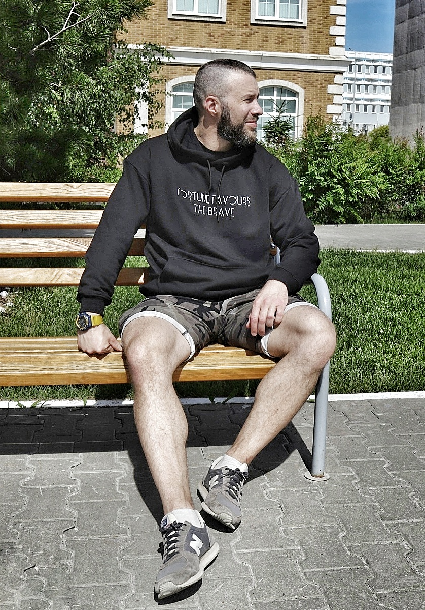

Hello, everybody! I really hope you are all doing well.
My name is Aleksandr and at this my
website I would like to share with you some of tasks
that I solve at my job while developing application
for registration of citizens at the place of residence and their family ties.
Base technology that I use - React.JS and all other libraries and technics
connected with it such as: react-router, redux, sass, axios and etc.
I'm not going to demonstrate super animation at this website, as it's purpose
to share with other developers how I have solved some tasks.
If my posts help somebody, I will be happy.